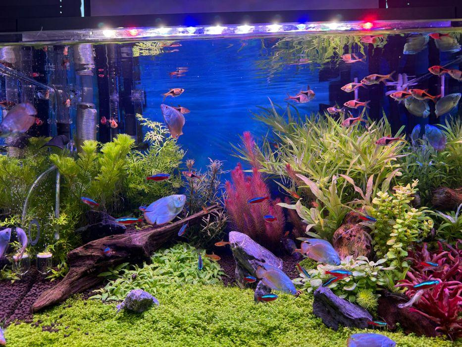
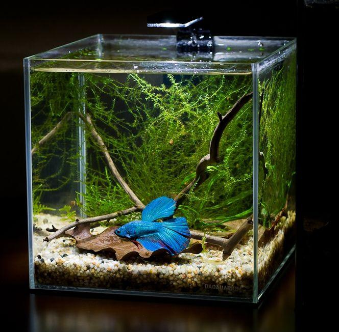
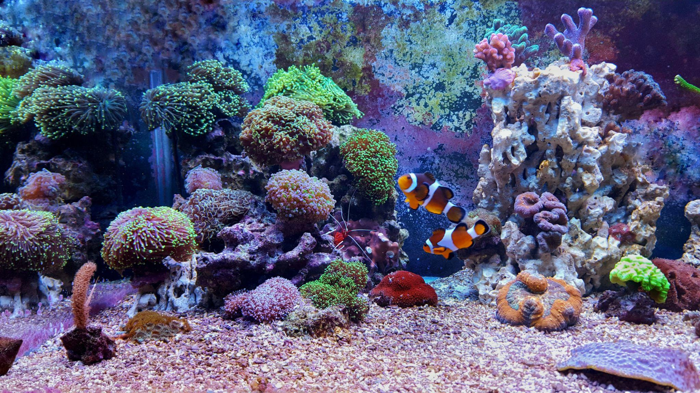
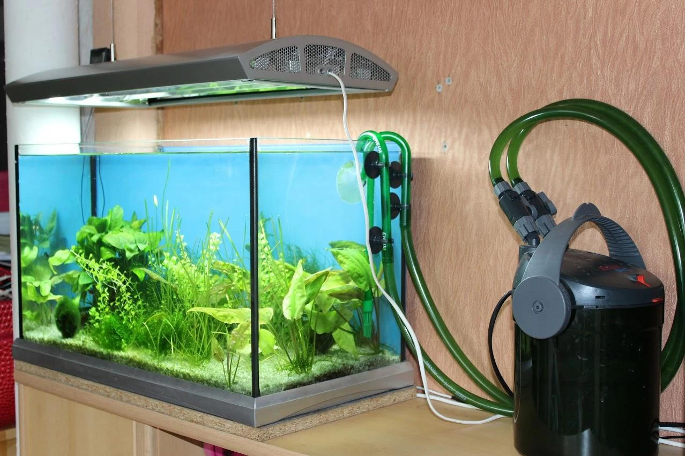
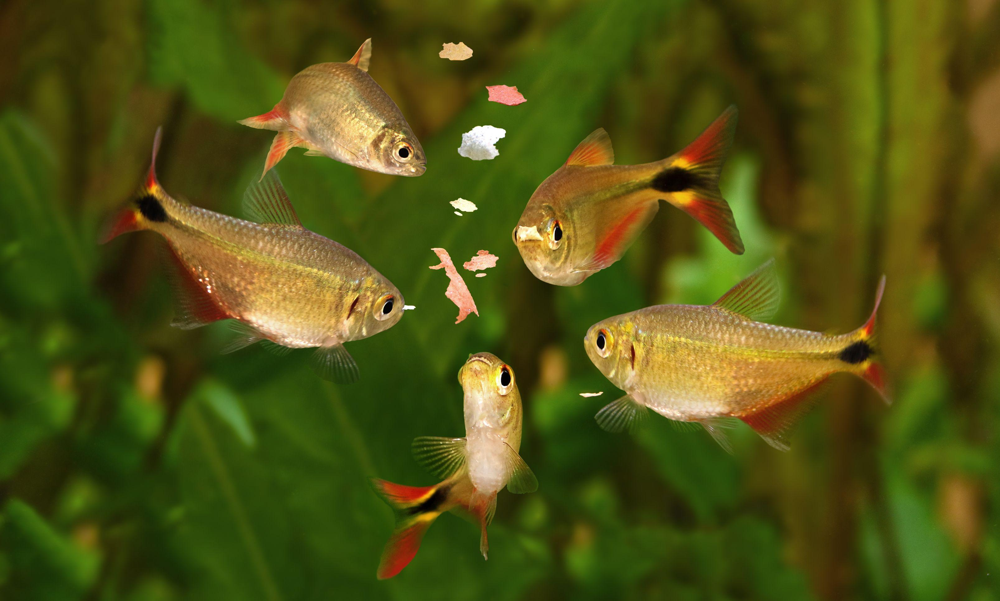
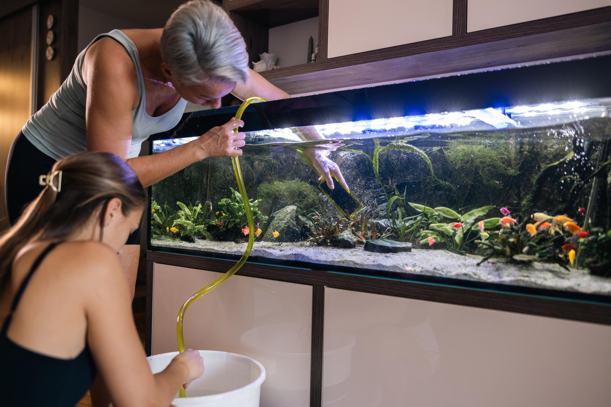

Tanks, filtration, heaters, lighting, aquatic plants, tropical fish food, water conditioners, gravel, live rock, coral, and health treatments — everything for freshwater and marine aquarium setups.
From beginner nano tanks to professional reef setups — everything you need is here.

Complete beginner kit with glass tank, quiet hang-on filter, LED hood lighting, and fish-safe silicone. Ready to cycle in 24 hrs.

Curved front glass 5-gallon tank with built-in sponge filter, LED lighting, and quiet submersible pump. Ideal for betta fish.

Rimless low-iron glass marine aquarium with built-in overflow, return pump fitting, and tank-ready drilled holes for sumps.

Ultra-quiet 3-stage biological, mechanical, and chemical filtration with self-priming push-button start. Handles up to 100 gallons.

Spirulina-enriched flake food with natural colour-enhancing astaxanthin. Ideal for tetras, guppies, mollies, and barbs.
High-protein sinking pellets designed for the feeding behaviour of cichlids. Includes spirulina and color-enhancing carotenoids.

A well-maintained aquarium is a healthy aquarium. Regular maintenance prevents disease outbreaks, keeps water parameters stable, and ensures your fish live long, vibrant lives.
Follow these six steps to safely set up your first aquarium and create a healthy, thriving aquatic environment.
Bigger tanks are more stable and easier to maintain. Begin with a minimum 20-gallon tank for freshwater community fish. Smaller tanks experience parameter swings much faster and are harder to manage for beginners.
Rinse aquarium gravel or sand thoroughly. Add driftwood, rocks, and decorations to create hiding spots. If using live plants, use nutrient-rich planted substrate.
Install your filter on the back or inside the tank. Set the heater to 76–80°F for tropical fish. Connect your LED lighting system and set timer for 8–10 hours of light per day.
Fill with tap water and immediately add water conditioner to neutralise chlorine and chloramine. Test pH (target 7.0 for most community fish) and temperature before proceeding.
This is the most important step. Add beneficial bacteria starter and run the filter. Test ammonia and nitrite levels daily. Only add fish when both read 0 ppm and nitrate appears.
Add fish slowly — no more than 3–4 fish per week. Float the bag for 15 minutes to temperature-equalise, then net fish into the tank. Do not add bag water to your tank.
Whether you're building your first tank or upgrading to a reef system — our aquarium experts are here to help. Shop our full range with free shipping on orders over $49.